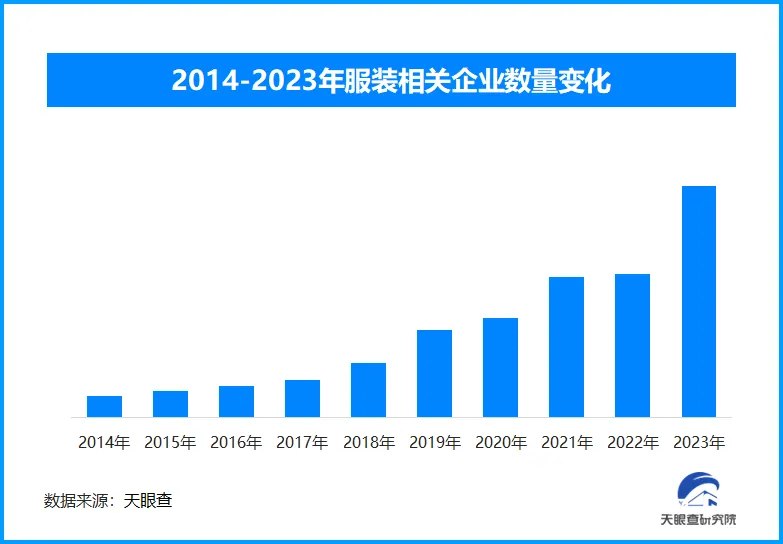
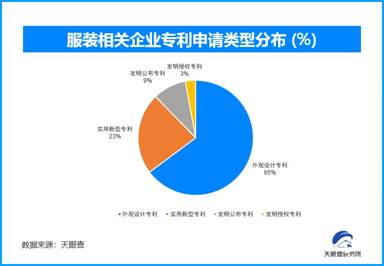

智能温控、再生纤维……今年秋冬服饰科技、环保与个性化并重
来源：南方都市报
秋冬服饰需求持续增长，市场热度不断攀升
今年服装市场消费呈现出积极的态势。据国家统计局数据显示，自2023年以来，我国服装、鞋帽、针纺织品等零售市场已展现出强劲的复苏势头，全年零售额突破1.4万亿元，同比增长12.9%。
预计2024年，这一趋势将延续，服饰零售市场将继续保持双位数增长。特别是秋冬季节，受换季需求增加、节日消费集中释放等因素影响，服饰市场有望实现更快增长。消费者的购买力在秋冬季节得到了进一步释放，为服装行业注入了新的活力。
这也在内容创作平台上得到了数据验证，从2024年春季开始，服装作品量在社交媒体平台上就已达到过去两年的峰值，互动量也持续攀升。尽管一直以来春夏季都作为一年中服饰内容热度最为集中的时段，但今年秋季以来，热度也已经远远超过去年同期。与此同时，各细分品类，如配饰、内衣等，均呈现出高速增长的态势。
根据电商平台发布的《2023保暖服饰消费观察》，00后和90后人群成为消费增长的主力军，环比增幅均超65%。新一代消费者在追求质价比的理念下，既要衣服保暖又要好看，还要有其他功能。这一趋势推动了服装行业的革新，以满足消费者日益精细和多元的需求。
天眼查专业版数据显示，截至目前，现存与服装相关的企业近2800万家，从企业年度注册量可以看出，在2021年以前服装相关企业注册量呈逐年递增趋势，2022年稍有放缓，但2023年再度开始飞速增长，并达到峰值，注册量超过552.9万家；特别在2024年以来，截至9月已新增注册企业已经超过503万家，全年或将超过去年的新增注册量。
从保暖黑科技到智能控温服饰，技术加持成秋冬服饰新亮点
随着科技的不断发展，保暖黑科技在秋冬服饰的应用成为今年服装市场的一大亮点。例如，“远红外蓄热”“火山岩蓄热”等材料技术广泛应用在羽绒服等秋冬服装中，不仅提升了服饰的保暖性能，更为人们带来了全新的穿着体验。各品牌推出的“极寒羽绒服”以三重保暖体系为极端气候提供解决方案，兼顾科技与时尚的平衡。
此外，据《2024天猫服饰多元化场景科学保暖趋势白皮书》指出，62%的受访者会提升保暖服饰在极冷和极湿环境的舒适感。南方消费者在选择秋冬服饰时，除了关注保暖性能，还会更关注防水、抗菌等性能；而北方消费者则更关注服饰的抗静电和亲肤透气性。这些多样化的需求推动了服装行业在保暖技术上的不断创新与升级。
不仅如此，作为“全新物种”的智能温控服装以其独特的功能性和时尚设计，也在这个季节快速成为市场上的新宠。这类服装采用了先进的智能温控技术，可以根据环境温度和人体活动状态自动调节服装内部的温度，确保穿着者在不同环境下都能保持舒适的体感。
智能温控服装的兴起，不仅满足了消费者对服装实用性的需求，更以其独特的科技感和时尚设计，成为秋冬季节的潮流单品。这类服装的出现，也推动了服装行业向更加智能化、个性化的方向发展。
天眼查专业版数据显示，截至目前，服装相关的专利申请共超过了38.8万条，对于服装而言，美观是最重要的指标，因此其中的外观设计专利占比达到65%；而在服装领域的发明与技术也“后来居上”，实用新型专利占比也达到了23%，正是这么多服装企业在服装制造上的不断创新与尝试，让秋冬服装呈现出美观度与技术基因并重的效果。
双势头：品牌追求环保可持续、消费者追求定制与个性
近年来，环保与可持续性已成为全球范围内的重要议题，秋冬服饰市场也不例外。越来越多的消费者开始关注服装的环保性能和可持续性，这促使许多服装品牌开始注重环保材料的使用和生产过程的可持续性。
一些品牌开始采用有机棉、再生纤维等环保材料来制作秋冬服饰，以减少对环境的污染。同时，这些品牌还通过优化生产流程、减少废弃物等方式来降低生产过程中的能耗和碳排放。这些努力不仅满足了消费者对环保和可持续性的需求，也为服装行业带来了更多的商业机会和发展空间。
不仅如此，在秋冬服饰市场中，个性化和定制化也成为了新的风尚。随着消费者对个性化和差异化的需求不断增加，许多服装品牌开始提供个性化定制服务，以满足消费者的独特需求。
通过线上平台或线下门店，消费者可以根据自己的喜好和需求选择面料、颜色、款式等元素，定制出独一无二的秋冬服饰。这种个性化定制的服务不仅提升了消费者的购物体验，也为服装品牌带来了更多的市场竞争力和商业价值。
作为国内领先的商业查询平台，通过天眼查的海量商业大数据，可以快速了解和分析特定产业的发展现状与发展态势，与服装相关的产业上下游动态、潮流趋势等，都可以通过数据可视化的方式快速掌握，以助力了解与决策。不仅如此，天眼查还拥有天眼风险、深度风险、财产线索、司法案件、商业履历等维度的内容，以助力外界对一个企业乃至于一个产业的更全面了解。
天眼查研究院认为，随着秋季的到来，服装消费产业迎来了新的变革。保暖黑科技的应用、环保与可持续性的趋势以及个性化与定制化的风尚共同推动了秋冬服饰市场的多元化发展。在这个充满机遇和挑战的时代，服装品牌需要不断创新和升级，以满足消费者日益增长的需求和期望。